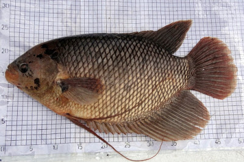

|
Gurami Poselen

Profile
Gurame ini memiliki ciri warna merah muda atau keperakan, sedangkan tubuh bagian bawah berwarna putih, ukuran kepala relatif kecil dibanding ukuran tubuhnya.
Sekali pemijahan gurame porselen mampu menghasilkan 8000 - 10.000 butir telur/ekor. Jumlah yang sangat banyak dibandingkan dengan gurame jenis lainnya. Itu juga yang menjadi alasan gurame jenis porselen sangat baik dijadikan bisnis pembibitan.
Pertumbuhan gurame porselen juga terbilang cukup cepat dan berat rata-rata gurame ini berkisar 1.5 kg - 2 kg/ ekor. Dan produksi telur sekali mijah sangat banyak. Boleh dibilang paling banyak dari jenis gurame lainnya. Oleh karena itu, jenis ikan gurame ini sangat cocok untuk para pembisnis ternak gurame.
|
|